原作是 Pete Cybriwsky（Instagram，另開分頁） 的 Noodle（另開分頁）：一隻會提醒你起來伸展、還會親自示範動作的小麵條。
拉麵是它的 Windows 桌寵版：平常待在桌面角落，或在工作列上走來走去，時間到了就跳出來叫你。另外加上喝水提醒、自訂提醒，也會看 Google 月曆，開會時不打擾。
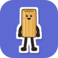
拉麵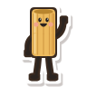
原作是 Pete Cybriwsky（Instagram，另開分頁） 的 Noodle（另開分頁）：一隻會提醒你起來伸展、還會親自示範動作的小麵條。
拉麵是它的 Windows 桌寵版：平常待在桌面角落，或在工作列上走來走去，時間到了就跳出來叫你。另外加上喝水提醒、自訂提醒，也會看 Google 月曆，開會時不打擾。
設定都在右鍵選單的「設定」，改了就自動存檔。
連續用電腦 30 分鐘（可以改）就叫你起來；按「開始」跟著做，它幫你計時；沒接到的話，點一下桌寵就再叫出來。
8 種伸展動作，桌寵一邊示範、泡泡一邊說明步驟；可以選想加強的重點，提醒時輪流排。
預設每 60 分鐘拿杯水在旁邊喝給你看，按「喝了」記一杯；錯過了，右鍵選「喝了一杯水」補記。
指定時間和重複（每天、平日、自選星期、單次），時間到了桌寵用對話泡泡說一句話。
開會時先不叫你；活動開始前 10 分鐘（可以改）跳出來提醒。用你自己的 Apps Script 讀取，只讀不寫。
5 分鐘沒碰鍵盤滑鼠就算休息過；通話中、全螢幕時不打擾；也可以設安靜時段。
Claude 在忙、你也坐了 20 分鐘以上，桌寵就提早叫你，趁等的時候起來動一動。
提醒都用對話泡泡出現在桌寵旁邊。
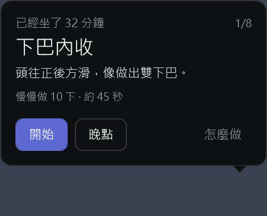
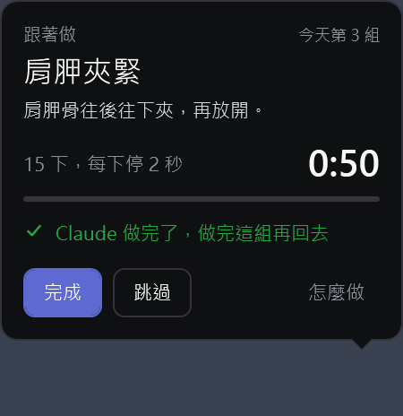
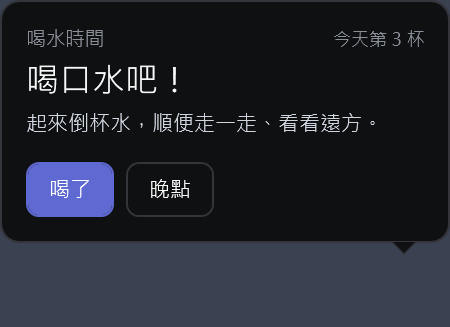
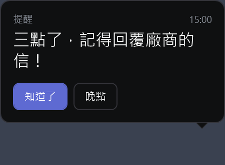
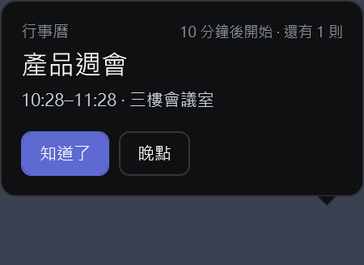
五個角色，設定裡隨時可以換；滑鼠移上去會跟你揮手。
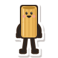
Toni水管麵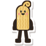
Sammy直麵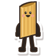
Patty筆管麵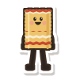
Lenny千層麵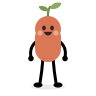
Sprout小芽
頸側伸展每邊 20 秒
門框伸展30 秒
胸椎伸展10 下
踮腳尖20 下
喝水拉麵新畫的動作角色與伸展動作示範來自 Pete Cybriwsky 的 Noodle（MIT 授權）。喜歡這些角色的話，到 Pete 的 Instagram @_re_pete（另開分頁） 看更多他的作品。
Windows 10 或 11。用的是 Windows 內建的 .NET Framework 4.8，不用另外安裝任何東西。
不會。閒著的時候 CPU 大約 0.5%、記憶體大約 80 MB；相同的動畫影格已經合併，靜止時幾乎不耗 CPU。
設定與紀錄都存在你的電腦（%USERPROFILE%\.noodle-pet），沒有使用統計，也不上傳。
Google 月曆是透過你自己帳號裡的 Apps Script 讀取，只讀不寫，金鑰只存在你的電腦；Claude Code 連動只連本機（127.0.0.1）。
先在「設定 → 一般」關掉開機自動啟動，右鍵點桌寵選「結束」，再刪掉 noodle-pet.exe 和 %USERPROFILE%\.noodle-pet 資料夾。連過 Google 月曆的話，exe 旁邊的 calendar-link.json 也一起刪掉。
不是。拉麵是非官方的 Windows 改寫版，與 Noodle 原作者無關，也未經原作者背書。角色、動作示範與說明來自 Noodle（MIT 授權），兩份授權全文在「設定 → 一般 → 授權資訊」。
伸展動作只是一般的活動建議，不能取代醫療建議。做的時候覺得痛或不舒服就停下來；有傷病的話，請先問醫師或物理治療師。